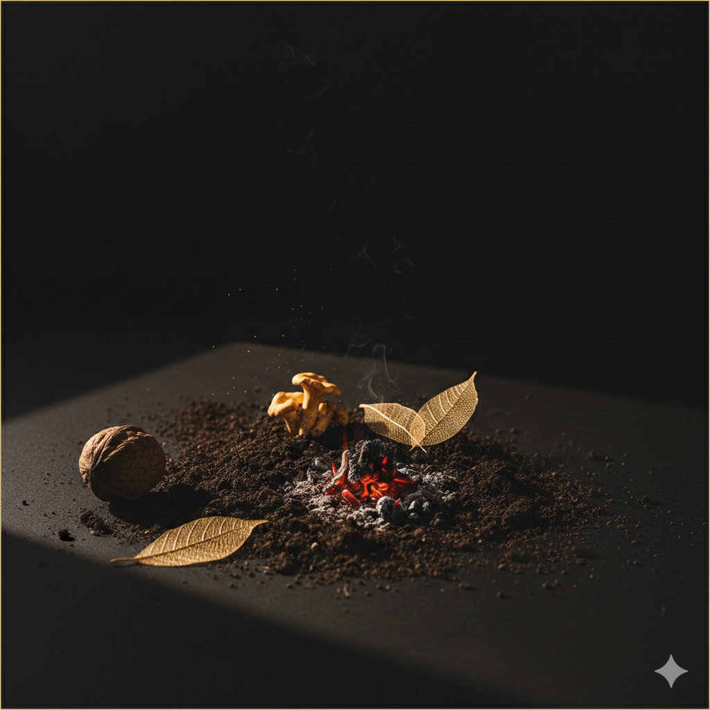

Bombón de Foie Gras
Corazón cremoso con cobertura crujiente y esencia de bosque.
Vino: Alsacia (Blanco)
Sabores de tierra, hojas secas y la calidez de los frutos de la estación.

Corazón cremoso con cobertura crujiente y esencia de bosque.
Huevos a baja temperatura sobre crema sedosa de calabaza asada.
Pescado de roca salvaje con emulsión de setas silvestres.
Carne de caza mayor con reducción de frutos rojos y castañas.
Higos caramelizados con masa hojaldrada y helado artesano de vainilla.
173 EUR por persona